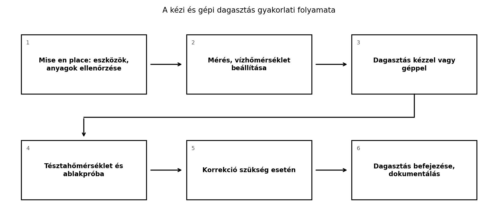

Hajnali négy óra van egy kis pékségben. A pék azt mondja: „Készíts elő 5 kg lisztből zsemletésztát kézzel, mert a kis dagasztógép most mosás alatt van, utána pedig indítsd el a 25 kg-os kenyértésztát a spirálgéppel.” Ugyanaz a tészta, mégis más fogásokat, más hőmérséklet- és időbeállítást igényel. Ha kézzel túl sokáig gyúrod, a tészta túlmelegszik és ragadni kezd. Ha gépen rossz fokozaton indítasz, a lisztpor felporzik, vagy a tészta szakad. Ebben az alfejezetben a dagasztás gyakorlati kivitelezését tanuljuk meg: előkészítést, kézi és gépi fogásokat, az ellenőrző méréseket és a dokumentálást.
A dagasztás elméleti alapjait már ismerjük: a cél a lisztfehérjék hidratálása és a sikérháló kiépítése (A dagasztás célja és a tészta kialakulása), a hőmérsékletet a dagasztóvízzel szabályozzuk (Tésztahőmérséklet és dagasztóvíz számítása), a bevitt munkát pedig a fajlagos dagasztómunkával jellemezzük (Dagasztási módok és a fajlagos dagasztómunka). Most ezeket a tudáselemeket alakítjuk kézre álló, a tanműhelyben biztonsággal végrehajtható műveletsorrá.

Továbbvitt eredmény. A jól bedagasztott tészta egyenletes, rugalmas szerkezete az alapja a kézi osztásnak, gömbölyítésnek és hosszformázásnak (Kézi osztás, gömbölyítés és hosszformázás). Aki itt hibázik – például túl meleg vagy ragadós tésztát ad tovább –, az a feldolgozó asztalnál már nem tudja maradéktalanul javítani.
Definíció. A mise en place (ejtsd: miz an plasz) a munka megkezdése előtti teljes előkészítést jelenti: minden nyersanyag bemérve, eszköz tiszta és kéznél, a víz hőmérséklete beállítva, a gép szemrevételezve, a technológiai lap kitéve.
Definíció. A dagasztási napló az a gyártási dokumentum, amelyben a dagasztás idejét, a tétel- vagy kádazonosítót, a lisztjelölést, a liszt és a víz tömegét, a számított és mért vízhőmérsékletet, a kívánt és mért tésztahőmérsékletet, a gépi dagasztás fokozatait és idejét, valamint a tészta állapotára vonatkozó észrevételeket rögzítjük.
Szabály. A dagasztást csak akkor szabad megkezdeni, ha a személyi higiéniai feltételek teljesülnek (tiszta munkaruha, hajháló, ékszer nélkül, sebellátás, kézmosás), a munkaterület és az eszközök tiszták, és a gép biztonsági szemléje megtörtént.
Szabály. Kézi dagasztásnál a lisztet mindig óvatosan, több részletben adagoljuk a folyadékhoz, vagy a liszt közepébe mélyedést készítünk, és a folyadékot fokozatosan keverjük bele. A ragadós tészta önmagában nem hiba: a túlzott liszthozzáadás viszont kemény, száraz, rosszul kelő terméket ad.
Szabály. Gépi dagasztásnál a gépet csak betanítás után, felügyelettel szabad kezelni. A dagasztás közben a gépbe nyúlni, a tésztát kézzel igazítani, a védőrácsot megkerülni tilos.
Definíció. A tészta érettsége a dagasztás után a gyakorlatban azt jelenti, hogy a tészta hőmérséklete a célérték közelében van, felülete sima, nem ragad túlzottan, az ablakpróba vékony, fényes hártyát ad, és a tészta enyhén rugalmas, ujjbenyomásra lassan visszaalakul.
Higiénia. A dagasztás előtti kézmosás kötelező. A munkaruhának tisztának kell lennie; a haj hajháló vagy sapka alatt. A munkaterületet – asztallap, dagasztóteknő, gépkád, gyúródeszka – csak élelmiszerrel érintkezésre alkalmas tisztítószerrel előkészített, tiszta felületen használjuk. A lisztes zsák és a vízmérő edény élelmiszer-biztonsági szempontból legyen azonosított, ne tároljunk benne vegyszert.
A mise en place lépései:
ahol a kívánt tésztahőmérséklet, a bemért liszt hőmérséklete, pedig a dagasztás közben keletkező hőmérséklet-emelkedést kifejező érték. Kézi dagasztásnál a súrlódási hő általában kicsi, gépi gyorsdagasztásnál nagyobb. A pontos értéket az üzemi naplókból vagy a gépkönyvből lehet meghatározni.
Példa. Kézi zsemletésztát készítünk. A kívánt tésztahőmérséklet , a liszt hőmérséklete , a kézi dagasztás becsült súrlódási hője . Ekkor:
A vizet tehát kb. -ra állítjuk be, majd a dagasztás után ellenőrizzük a tészta tényleges hőmérsékletét, és a következő tételnél szükség esetén korrigálunk.
HACCP. A dagasztás előtti bemérésnél kritikus szempont, hogy az allergén és nem allergén anyagok külön edényben, azonosítható jelöléssel legyenek, és a lisztpor ne kerüljön más nyersanyagokra. A mérleget használat előtt tiszta, száraz felületre kell helyezni, és ellenőrizni kell a nullaállását. (ellenőrizendő: a pékség HACCP-terve a bemérési pontra vonatkozó nyomonkövetési és tisztítási előírása)
A kézi dagasztás elsősorban kis tételeknél, oktatási helyzetben, vagy gép meghibásodásakor fordul elő. A technika lényege: a tésztát húzzuk, hajtogatjuk, nyomjuk és forgatjuk, hogy a sikérháló a tészta teljes tömegében kialakuljon.
Gyakorlat – kézi dagasztás lépései:
A 4. lépés mozdulatát az ábra felső sora bontja négy kockára (a pék a kép alsó szélénél áll): 1 a tenyértő a tészta közepén, 2 „nyújt” – a tenyér elhúzza a tésztát magától, 3 „hajt” – a megnyújtott részt visszahajtjuk, a másik kéz ellennyomást ad, 4 „forgat” – negyedfordulat, majd ismét nyújt. Az alsó sor a 6. lépés ablakpróbáját mutatja.
Az ablakpróbánál a kiépült sikérháló vékony, áttetsző hártyát ad, amelyen átsejlik a fény; ha a tészta szakadozott széllel elszakad, a dagasztást folytatni kell. A HTML-kiadásban a négy mozdulat és a két ablakpróba-kép lépésenként léptethető.
Allergén. Kézi dagasztásnál a munkalapot és a kezet a tészta megkezdése előtt ellenőrizni kell, hogy ne maradjon rajta előző termékből származó allergén nyom (pl. tojásos vagy diós tészta). A lisztpor ellenőrzése különösen fontos, mert a gluténtartalmú liszt a levegőben is terjedhet, és szennyezheti a gluténmentes munkaterületet. Ha allergénmentes terméket készítünk, a gyártási sorrendet és az eszközhasználatot a pékség HACCP-tervének megfelelően kell betartani.
A gépi dagasztás előnye az egyenletes, ismételhető munka, feltéve, hogy a beállítások a tésztához illenek. A Dagasztási módok és a fajlagos dagasztómunka alfejezetben láttuk, hogy a spiráldagasztó, a villás dagasztó és a bolygókeverő más-más igénybevételt ad. A gyakorlatban a gépkönyv és a technológiai lap adja meg a fokozatot és az időt; az alábbi lépéssor általános keret.
Gépbiztonság. A dagasztógépet csak betanítás után, felügyelettel kezelheted. Üzem előtt ellenőrizd a védőburkolat meglétét, a reteszelést, a vészleállító gombot és az áramellátást. A gépbe nyúlni, a tésztát a kádban kézzel megigazítani, a reteszelést áthidalni tilos. Tisztítást, kaparást csak teljesen leállított, áramtalanított, újraindítás ellen biztosított gépen végezhetsz.
Gyakorlat – spiráldagasztós kenyértészta bedagasztása:
Higiénia. A dagasztógép kádját, a spirált és a burkolatot minden tétel után meg kell tisztítani. A tésztamaradékok a baktériumok és penészgombák melegágya lehetnek; a rászáradt tészta ráadásul a következő tételbe kerülve minőségi hibát okoz. A tisztításhoz csak a gépkönyv szerinti, élelmiszer-üzemre engedélyezett szereket használj.
Nem minden tészta dagasztható ugyanazzal a beállítással. A gyakorlatban a két legfontosabb változó a liszt vízfelvevő képessége és a sikér minősége, valamint a termék típusa (sovány vagy dúsított tészta).
Szabály. Gyenge, kevésbé ellenálló sikérű lisztnél rövidebb, kíméletesebb dagasztás kell; erős, jó minőségű sikérű lisztnél hosszabb vagy intenzívebb dagasztás szükséges a háló teljes kiépítéséhez. A dúsított tésztáknál (magas zsiradék- és cukortartalom) a zsiradékot általában a tészta részleges kialakulása után adjuk hozzá, mert korán hozzáadva késlelteti a sikérhidratációt.
A gyakorlatban a beállítás lépései:
Példa. Ugyanaz a kenyértészta-állag más vízmennyiséget kíván BL 80 fehér liszttel, mint BL 112-es félbarna liszttel. A BL 112-es liszt több korpát és hamut tartalmaz, általában több vizet vesz fel, de a sikérháló kevésbé rugalmas lehet. Ezért az azonos állaghoz BL 112-vel kb. 60% víz (TA 160), BL 80-nal 58% (TA 158) is elég lehet. A pontos arányt próbadagasztással kell meghatározni. (ellenőrizendő: lisztvizsgálati adatok, üzemi próbadagasztás)
A dokumentálás nem papírmunka önmagáért: ez a nyomonkövethetőség és a hibakeresés alapja. Ha egy tétel kenyeret később reklamálnak, a naplóból kiderül, milyen lisztből, milyen hőmérsékleten, milyen gépbeállítással készült.
Definíció. A dagasztási napló minimálisan a következő rovatokat tartalmazza:
| Rovat | Példa bejegyzés |
|---|---|
| Dátum, műszak, pék neve | 2025. 01. 15., éjszakai, Kovács Péter |
| Tétel- vagy kádazonosító | 3. kád, kenyértészta |
| Liszt megnevezése, jelölése, liszt hőmérséklete | BL 80, 10 kg, 20 °C |
| Víz mennyisége, számított és mért hőmérséklete | 5,8 kg, számított 28 °C, mért 28,5 °C |
| Élesztő, só, egyéb anyagok | 0,30 kg friss élesztő, 0,20 kg só |
| Gépi dagasztás fokozatai, ideje | 1. fokozat 3 perc, 2. fokozat 5 perc |
| Kívánt és mért tésztahőmérséklet | kívánt 27 °C, mért 27,4 °C |
| Tészta állapota, ablakpróba | sima, rugalmas, ablakpróba vékony, megfelelő |
| Megjegyzés, eltérés | nincs eltérés |
Szabály. A dagasztási naplót a dagasztás után azonnal, olvashatóan kell kitölteni. A mért értékeket nem szabad utólag „szépíteni”; ha eltérés van, azt fel kell tüntetni. A napló a gyártási dokumentáció része, a HACCP-rendszer szerinti ellenőrző pont lehet.
HACCP. A dagasztási paraméterek – különösen a tésztahőmérséklet és a dagasztási idő – nem feltétlenül kritikus szabályozási pont (CCP), de a tészta túlzott felmelegedése vagy a túl hosszú állásidő a mikrobaszaporodást elősegítheti. A naplóban ezért a vizes tészták esetében a dagasztás utáni azonnali feldolgozásra vagy hűtött pihentetésre vonatkozó utasítás betartását is rögzíteni kell. (ellenőrizendő: a pékség HACCP-terve, a késztermékre és félkész termékre előírt hőmérséklet-idő határok)
Recept. Az alábbi eljárás egy 5 kg lisztből készülő, TA 158-as vizes zsemletészta kézi bedagasztását mutatja. A mennyiségek tanulási példák; a tényleges adatokat a technológiai lap adja meg.
Technológiai lap. (A receptúra és a paraméterek tanulási példák; ellenőrizendő: az üzem technológiai lapja, a lisztvizsgálati adatok és a gépkönyv.)
Termék: Fehér kenyér, közvetlen eljárás, kész darabtömeg 500 g, tétel: 1 kád, 10,00 kg liszttel, kb. 28 db formázott vekni.
Receptúra-táblázat:
| Nyersanyag | Lisztre vetített % | Mennyiség (kg) | Megjegyzés |
|---|---|---|---|
| Búzaliszt BL 80 | 100 | 10,00 | 20 °C-ra temperálva |
| Víz | 58 | 5,80 | dagasztóvíz, hőmérséklet számítva |
| Sütőélesztő (friss) | 3 | 0,30 | vízben elkeverve |
| Étkezési só | 2 | 0,20 | a dagasztás elején a liszthez |
| Összesen | 163 | 16,30 | tésztatömeg |
Műveleti paraméterek:
Allergének: Az 1169/2011/EU rendelet szerint jelölendő allergén: búza (glutén). A többi alapanyag (víz, élesztő, só) általában nem allergén, de a tényleges gyártási környezetben keresztszennyeződés lehet; ezért a „nyomokban tartalmazhat” jelölést a pékség HACCP-tervével összhangban kell alkalmazni. (ellenőrizendő: az aktuális allergénlisták és a 1169/2011/EU II. melléklete)
HACCP- és minőségi pontok:
Egy tanuló az éjszakai műszakban először készített nagy tételű kenyértésztát a spiráldagasztóban. A technológiai lap szerint 2. fokozaton 6 percet kellett volna dagasztania, de a tészta 5 perc után is nagyon lágy volt, és a kád falára kenődött. A tanuló úgy gondolta, hogy a liszt rossz, ezért lisztet akart utántölteni anélkül, hogy a műszakvezetőt megkérdezte volna. A műszakvezető megállította, és megkérdezte: „Mérted-e a liszt hőmérsékletét? Nézted-e a lisztjelölést? Ellenőrizted-e a víz mennyiségét?” Kiderült, hogy a tanuló a technológiai lapon előírt liszt helyett tévedésből egy gyengébb, kevesebb vizet felvevő lisztet mért be, és a dagasztóvíz hőmérséklete is 3 °C-kal melegebb volt a számítottnál. A tészta tehát nem azért volt lágy, mert a készleten lévő liszt „rossz”, hanem azért, mert a bemért nyersanyag és a beállítás eltért a technológiai laptól. A műszakvezető nem engedett lisztet hozzáadni, hanem a következő kádnál korrigálta a vizet és a dagasztási időt, és a naplóba beírta az eltérést. Tanulság: az eltérést először a bemért anyagok azonosításában (lisztjelölés, mennyiség) és a mért paraméterekben keressük, mielőtt a receptúrát – például liszt utántöltésével – módosítanánk.
Cél: Bedagasztani egy kis tételű tésztát kézzel és egy nagyobb tételt géppel, a technológiai lap paraméterei szerint, majd dokumentálni a méréseket.
Eszközök és anyagok: mérleg, hőmérő, tésztakaparó, dagasztóteknő vagy tiszta munkalap, dagasztógép (ha gépi tétel), vízforraló, jég a hőmérséklet korrigálásához, liszt, élesztő, só, víz, technológiai lap, dagasztási napló.
Higiénia. A munka megkezdése előtt ellenőrizd a személyi higiéniát: tiszta munkaruha, hajháló, ékszer nélkül, kezek megmosva. A munkalapot és a dagasztóeszközt tisztítsd meg, és győződj meg arról, hogy nincs rajtuk előző tételből származó tésztamaradék vagy allergén nyom.
Gépbiztonság. Ha gépi dagasztást végzel, először szemrevételezd a dagasztógépet: védőrács, reteszelés, vészleállító, kád helyzete. Csak akkor indítsd, ha minden rendben van. A gép járása közben soha ne nyúlj a kádba. Tisztítás előtt áramtalaníts, és várd meg a forgó rész teljes leállását.
Lépések:
Ellenőrzési pontok: tésztahőmérséklet ( a célértékhez képest, ha a tűrés a technológiai lapban így szerepel), ablakpróba vékony hártyája, a tészta felületének simasága, a kád faláról való leválás.
Dokumentálás: A dagasztási naplóba minden mért és beállított érték bekerül. Az eltéréseket piros tollal vagy külön megjegyzésben jelezheted, de soha ne töröld ki az eredeti bejegyzést.
A bedagasztott tészta minőségét a következő jellemzőkkel ellenőrizzük:
Hiba. A tanuló a kézi dagasztásnál folyamatosan liszttel szórja az asztalt, hogy ne ragadjon. Ok: a ragadósságot hibának gondolja. Javítás/megelőzés: kevesebb lisztet adj, használj tésztakaparót, és pihentesd a tésztát rövid ideig; a sikér kiépülésével csökken a ragadás. A túlzott liszthozzáadás kemény, száraz, rosszul kelő terméket ad.
Hiba. Gépi dagasztás után a tészta hőmérséklete 4 °C-kal meghaladja a célértéket. Ok: rosszul kiszámított vagy rosszul beállított dagasztóvíz-hőmérséklet, esetleg a súrlódási hő alábecsülése. Megelőzés: minden tétel után mérj, és korrigáld a vízhőmérsékletet; a súrlódási hőt az adott gépre és tésztára a tényleges tétel adataiból számítsuk vissza: (pl. ), és néhány tétel átlagát írjuk a dagasztási naplóba.
Hiba. A tészta szétfolyik, nem áll össze. Ok: túl sok víz, túl hosszú dagasztás vagy gyenge sikérű liszt. Megelőzés: a lisztvizsgálati adatok alapján ellenőrizd a TA-t, és próbadagasztással állítsd be a vízmennyiséget. Ha a tészta mégis szétfolyik, ne a lisztet szórd rá, hanem a következő tételnél csökkentsd a vizet.
Hiba. A tanuló a dagasztógépet járás közben kézzel kaparja le a tésztáról, vagy a kádba nyúl. Ok: figyelmetlenség, időnyomás. Veszély: a forgó spirál vagy villa súlyos kézsérülést okozhat. Megelőzés: a gépet mindig leállítva, áramtalanítva, reteszelve szabad megbontani; a szerszámot csak a gép teljes leállása után lehet a kádba helyezni.
Az ábra a hibás és a helyes eljárást veti össze. Balra (✗): 1 felnyitott védőrács, 2 forgó spirál, 3 a kádba benyúló kéz kaparóval, 4 veszélyzóna. Jobbra (✓): 1 a spirál áll, 2 a főkapcsoló „0” állásban, lakattal és figyelmeztető címkével biztosítva az újraindítás ellen, 3 a dugvilla kihúzva, 4 a kaparó a kád falán, a kéz a kád peremén kívül.
Kaparás, mintavétel, ablakpróba csak álló, áramtalanított gépen. A vészleállító benyomása csak leállítja a gépet, nem választja le az energiáról: a beavatkozás előtt a főkapcsolót „0” állásba kell fordítani és lezárni, vagy a dugvillát kihúzni (ellenőrizendő: a gép gépkönyve és az üzemi leválasztási-lakatolási eljárás). A gép szerkezetét és biztonsági elemeit a Dagasztógépek biztonságos üzemeltetése, gépápolás és folytonos tésztakészítés alfejezet mutatja be. A HTML-kiadásban a helyes és a hibás kép között lehet váltani, a veszélyzóna ki-be kapcsolható.
1. feladat (A). Határozd meg a mise en place fogalmát a dagasztás gyakorlatában, és sorolj fel legalább négy elemet, amelyet a dagasztás előtt ellenőrizni kell.
2. feladat (A). Egy kézi zsemletésztához a kívánt tésztahőmérséklet 24 °C, a liszt hőmérséklete 20 °C, a kézi dagasztás súrlódási hője 1 °C. Mekkora legyen a dagasztóvíz hőmérséklete?
3. feladat (B). A technológiai lap szerint a kenyértészta TA-ja 160. Mennyi dagasztóvizet kell bemérni 25,00 kg liszthez, ha nincs kovász és más folyadék? Mennyi lesz a tésztatömeg, ha még 0,75 kg élesztőt és 0,50 kg sót adunk hozzá?
4. feladat (B). Ismertesd a spiráldagasztós gép üzemeltetésének lépéseit a dagasztás szempontjából. Milyen ellenőrzéseket végzel az egyes lépések után, és mit jegyeznél a dagasztási naplóba?
5. feladat (C). Egy tétel kenyértészta dagasztása után a mért tésztahőmérséklet 31 °C, a kívánt 27 °C volt. A tészta lágy, ragadós, ablakpróbán nem ad vékony hártyát. Elemezd a lehetséges okokat, és írd le, hogyan javítanád a következő tételnél a vízhőmérsékletet, a dagasztási időt, és milyen méréseket végeznél el.
6. feladat (D). A fenti technológiai lap szerint ellenőrizd a tészta tömegét: 10 kg liszt, 5,8 kg víz, 0,3 kg élesztő, 0,2 kg só. Milyen a lisztre vetített százalékok összege, és egyezik-e a mennyiségek összege a tésztatömeggel? Magyarázd meg, miért nem 100% az összeg, és mi a jelentősége a TA-nak.
A megoldások a fejezet végén találhatók.
Önellenőrzés – válaszok:
1. feladat (A). A mise en place a munka előtti teljes előkészítés. Elemei: nyersanyagok kimérése, eszközök előkészítése, a technológiai lap áttekintése, a víz hőmérsékletének kiszámítása és beállítása, a gép biztonsági szemléje, a személyi higiénia ellenőrzése.
2. feladat (A). .
3. feladat (B). TA 160 esetén a víz a liszt 60%-a. Vízmennyiség: . Tésztatömeg: liszt + víz + élesztő + só = .
4. feladat (B). Lépések: 1) biztonsági szemle, 2) száraz anyagok a kádba, 3) víz és élesztő hozzáadása, 4) lassú fokozat 2–4 perc, 5) gyors fokozat 4–8 perc (a technológia szerint), 6) leállítás után ablakpróba és hőmérsékletmérés, 7) dokumentálás. Ellenőrzések: a tészta összeállása, a kád faláról való leválása, ablakpróba, hőmérséklet. A naplóba kerül: liszt, víz, hőmérsékletek, fokozatok, idők, megjegyzés.
5. feladat (C). Lehetséges okok: a dagasztóvíz túl meleg volt, a súrlódási hőt alábecsülték, vagy a dagasztási idő hosszabb volt a szükségesnél. A tészta lágy, ragadós, ami lehet túldagasztás vagy túl sok víz. Következő tételnél: mérjük meg a liszt hőmérsékletét, számoljuk újra a vízhőmérsékletet a tényleges súrlódási hővel (pl. mérjük meg előző tétel adataiból), csökkentsük a dagasztási időt vagy a vízmennyiséget, és végezzünk próbadagasztást. Dokumentáljuk az eltérést.
6. feladat (D). A lisztre vetített százalékok összege: 100 + 58 + 3 + 2 = 163%. A mennyiségek összege: 10,00 + 5,80 + 0,30 + 0,20 = 16,30 kg. Ez megegyezik a tésztatömeggel, mert a litereket kg-ban adtuk meg. Az összeg nem 100%, mert a lisztre vetített százalék mindig a liszt tömegéhez viszonyít; a TA külön csak a vizet veszi figyelembe: (10+5,8)/10*100 = 158. A TA a tészta konzisztenciájának jellemzésére szolgál, míg a 163% a teljes anyagnormát mutatja.
A kézi és gépi dagasztás gyakorlati kivitelezése a személyi higiéniával, a mise en place-szel és a gépbiztonsági szemlével kezdődik. A dagasztóvíz hőmérsékletét a kívánt tésztahőmérséklet, a liszt hőmérséklete és a súrlódási hő alapján számítjuk: . Kézi dagasztásnál a tésztát nyújtjuk, hajtogatjuk és forgatjuk, miközben kerüljük a túlzott liszthozzáadást; a kész tésztát ablakpróbával és hőmérsékletméréssel ellenőrizzük. Gépi dagasztásnál a lassú és gyors fokozatot a technológiai lap szerint állítjuk, és a gépbe járás közben tilos belenyúlni. A tészta paramétereit a lisztminőség és a termék szerint állítjuk be: gyenge lisztnél rövidebb, erős lisztnél hosszabb dagasztás, dúsított tésztánál a zsiradék késleltetett adagolása. A dagasztási napló rögzíti a lisztet, a vizet, a hőmérsékleteket, a gépi beállításokat és az eltéréseket. Továbbvitt eredmény. A jól bedagasztott, dokumentált tészta az alapja a Kézi osztás, gömbölyítés és hosszformázás műveleteinek; a tészta hőmérséklete, konzisztenciája és érettsége meghatározza a további feldolgozhatóságot.